UB 3D 실습 · Fusion
Fusion을 설치하고 기본 조작을 익힌 뒤, AI에게 Fusion 모델링을 맡기는 방법과 실제로 맡겨 본 결과를 정리했습니다.
학생은 교육용 라이선스로 Fusion을 1년 동안 무료로 쓸 수 있고, 재학 중이면 매년 갱신됩니다. 학생 확인에 며칠이 걸릴 수 있으니 실습 전에 미리 신청해 두세요.
개인용으로도 됩니다
Fusion 개인용(무료, 비상업용)은 학생 확인 없이 바로 받을 수 있고, 이번 실습 내용은 모두 됩니다. 다만 수정할 수 있는 디자인이 10개까지이고 AI 연결은 교육용에서만 확인했기 때문에, 교육용을 조금 더 권합니다.
| 동작 | 방법 |
|---|---|
| 화면 이동 | 가운데 버튼을 누른 채 끌기 |
| 회전 | Shift + 가운데 버튼을 누른 채 끌기 |
| 확대·축소 | 휠 굴리기 |
| 키 | 명령 |
|---|---|
| L | 선 (Line) |
| R | 2점 직사각형 (2-Point Rectangle) |
| C | 중심 지름 원 (Center Diameter Circle) |
| D | 스케치 치수 (Sketch Dimension) |
| X | 보조선으로 바꾸기 (Construction) |
| T | 자르기 (Trim) |
| O | 간격띄우기 (Offset) |
| E | 돌출 (Extrude) |
| F | 필렛 (Fillet) |
| H | 구멍 (Hole) |
| I | 측정 (Measure) |
| S | 명령 검색 상자 |
한글 메뉴 이름이 다르게 보이면 괄호 안 영어 이름으로 찾으면 됩니다.
출력용 파일 내보내기
왼쪽 브라우저에서 바디를 오른쪽 클릭 → 메쉬로 저장(Save As Mesh) → 3MF 또는 STL을 고릅니다.
Fusion 안에 들어 있는 MCP 서버를 켜고 AI 데스크톱 앱을 연결하면, 말로 지시한 내용을 AI가 Fusion에서 직접 모델링합니다. chatgpt.com, claude.ai 같은 웹 채팅에서는 바로 연결되지 않습니다.
| AI | 쓰는 앱 | 무료 계정 |
|---|---|---|
| ChatGPT | ChatGPT 데스크톱 앱(Codex) | 됨. 월 사용 한도 있음 |
| Claude | Claude 데스크톱 앱 | 확인 못 함. Pro 이상은 됨 |
| Gemini | Antigravity 앱 | 문서상 됨(AI Plus로 확인). Gemini 3.8 Flash만 |
| Autodesk Assistant | Fusion에 들어 있음 | 교육용 라이선스에서 확인. 연결 필요 없음 |
27182인지 확인한 뒤 Apply를 누릅니다.MCP - http://127.0.0.1:27182/mcp가 보이면 켜진 것입니다.체크박스가 없으면 Fusion을 최신 버전으로 업데이트합니다.
MCP → 플러그인 → MCP 탭으로 갑니다.fusion, 유형 스트리밍 가능한 HTTP, URL http://127.0.0.1:27182/mcp를 넣습니다. 나머지 칸은 비워 둡니다./mcp를 입력해 fusion 사용함이 보이면 연결된 것입니다. "인증 미지원"은 정상입니다.Fusion을 검색합니다.Gemini 데스크톱 앱에는 MCP 서버를 추가하는 메뉴가 없어서, Google이 만든 Antigravity 앱을 씁니다.
%USERPROFILE%\.gemini\config를 입력하고, 파일 형식을 모든 파일로 바꾼 뒤 mcp_config.json을 엽니다.fusion 항목만 추가합니다.{
"mcpServers": {
"fusion": {
"serverUrl": "http://127.0.0.1:27182/mcp"
}
}
}주소 항목 이름은 반드시 serverUrl이어야 합니다. url이나 httpUrl은 인식되지 않습니다.
Fusion 오른쪽 위 Assistant 아이콘을 누르면 오른쪽에 대화창이 열립니다. 따로 연결할 필요가 없습니다.
아래 문장을 보내 Fusion에 큐브가 생기면 연결이 끝난 것입니다. "Fusion MCP 도구로"를 넣어야 ChatGPT가 화면을 직접 조작하려 하지 않고 MCP를 씁니다.
Fusion MCP 도구로 10mm 큐브를 만들어 줘| 증상 | 해결 |
|---|---|
| ChatGPT가 "Computer Use" 허용을 묻는다 | 거부한 뒤 "Fusion MCP 도구로"를 넣어 다시 요청 |
| 도구 실행 승인 창이 뜬다 | 정상. 실행할 내용을 보고 한 번만 허용 |
| 연결되지 않는다 | Fusion이 켜져 있는지, MCP 체크와 포트를 다시 확인 |
| 명령이 실행되지 않는다 | 홈 화면이 아니라 디자인을 열기 |
| 반응 없이 멈춘다 | Fusion에 열려 있는 대화상자(예: 복구된 문서)를 닫기 |
MCP가 켜져 있는 동안에는 내 컴퓨터의 다른 프로그램도 로그인 없이 Fusion에 명령을 보낼 수 있습니다.
AI에게 치수만 던져 주면 숫자는 맞아도 쓸 수 없는 모양이 나옵니다. 아래 틀로 무엇에 쓰는지까지 알려 주고, 만들기 전에 질문하게 하면 결과가 훨씬 좋아집니다.
위의 세 칸은 직접 채우고, [진행 방식]은 그대로 붙여 넣습니다. 프린터는 UB는 프루사 MK4나 MK3S, 돌구름은 뱀부랩 P2S입니다. 모르는 값은 비워 두지 말고 AI에게 물어보면서 정하면 됩니다.
[무엇에 쓰는지]
(어디에 붙이고, 무엇을 하는 부품인지)
[맞춰야 하는 숫자]
- 붙는 부품의 구멍 간격·지름
- 꼭 지켜야 하는 거리
- 고정할 볼트 규격과 구멍 지름
- 끼우는 부분의 크기
[참고 자료]
(있으면 사진이나 스케치 첨부. "모양과 배치만 참고하고, 고정 방식과 재료는 내가 적은 대로 해 줘.")
[진행 방식]
Fusion MCP 도구로 새 디자인에 만들어 줘. (프린터 이름)으로 PLA 출력할 거야.
1. 만들기 전에 내 말을 어떻게 이해했는지 쉬운 말로 다시 설명해 줘. 모르는 값은 추측하지 말고, 정해야 할 게 있으면 선택지로 질문해 줘.
2. 큰 모양만 먼저 만들고 멈춰. 내가 괜찮다고 하면 나머지를 만들어 줘.
3. 다 만들면 내가 준 숫자대로 됐는지 Fusion에서 재서 표로 보여 줘.
4. 용도를 생각했을 때 약한 곳, 출력할 때 바닥에 놓을 면과 서포트가 필요한 곳을 알려 줘.아래 AI 비교에 쓴 요청입니다.
[무엇에 쓰는지]
3030 알루미늄 프로파일에 NEMA17 스테퍼 모터를 고정하는 브라켓이 필요해.
이 모터로 프로파일과 나란한 리드스크류를 돌릴 거야.
[맞춰야 하는 숫자]
- NEMA17 모터: 나사 구멍 31mm 간격 정사각형, 지름 3.2mm 4개 / 가운데 구멍 지름 22.3mm / 모터 몸체 42.3mm 정사각형
- 프로파일에 닿는 면에서 모터 축 중심까지 33.75mm
- 프로파일에 M6 볼트 2개와 T너트로 고정, 구멍 지름 6.3mm
- 프로파일 홈에 끼우는 돌출부: 폭 6.5mm, 높이 3.5mm, T너트 자리는 길이 11mm씩 비우기
[진행 방식]
Fusion MCP 도구로 새 디자인에 만들어 줘. 프루사 MK4로 PLA 출력할 거야.
1. ~ 4. (위 틀과 같음)(고칠 부분)을 (어떻게) 바꿔 줘. (바뀌면 안 되는 것)은 그대로 둬.보이는 증상이 아니라 원인을 말해야 합니다. Autodesk Assistant가 모터를 보강판 반대쪽에 달아서 모터 아래가 떠 있었을 때, "받침이 모터에 안 닿으니 닿게 해 줘"라고 하자 블록만 하나 더 붙였습니다. 원인을 말하면 이렇게 됩니다.
모터가 보강판 반대쪽에 달려 있어. 모터 몸체가 보강판 사이, 바닥판 위에 오도록 바꿔 줘. 구멍 크기와 간격, 축 높이는 그대로 둬.ChatGPT, Gemini, Autodesk Assistant에게 위의 채운 예시로 같은 NEMA17 모터 브라켓을 맡겼고(ChatGPT는 참고 사진도 넣음), 직접 설계한 것과 Claude 것까지 함께 출력했습니다. Claude 것은 운영진이 여러 번 고쳐 달라고 해서 나온 최종본입니다. 모든 AI가 구멍 간격과 축 높이 같은 숫자는 맞췄습니다. 차이는 숫자 밖의 판단, 즉 볼트 머리가 들어갈 자리, 모터 방향, 서포트에서 났습니다.
| 만든 것 | 출력 | 서포트 | 문제 |
|---|---|---|---|
| 직접 설계 | 18g 1시간 2분 | 필요 | 없음 |
| Claude | 19.95g 1시간 6분 | 없음 | 없음 |
| Gemini | 23.72g 1시간 15분 | 필요 | 렌치볼트 머리가 모터와 1.4mm 겹침 |
| ChatGPT | 22.8g 1시간 12분 | 필요 | 렌치볼트 머리가 모터에 걸림, 보강 블록이 모터 자리를 0.15mm 침범 |
| Assistant | 출력 안 함 | — | 모터를 보강판 반대쪽에 달아 길이가 106mm |
| AI | 걸린 시간 | 사용량 |
|---|---|---|
| ChatGPTFree · Codex · GPT-5.6 Terra | 약 9분. 그전에 3번 넘게 실패 | 모든 시도 후 월 한도 40% 남음 |
| GeminiAI Plus · Antigravity · Gemini 3.8 Flash | 약 19분. 질문 답변 대기 포함 | 주간 한도 96% → 62% |
| AssistantFusion 내장 | 첫 시도에서 Fusion이 8분 넘게 멈춤, 이어서 약 4분 | 확인 못 함 |
| ClaudeMax · Fusion 스크립트 | 운영진이 여러 번 고쳐 달라고 한 최종본이라 비교 제외 | — |
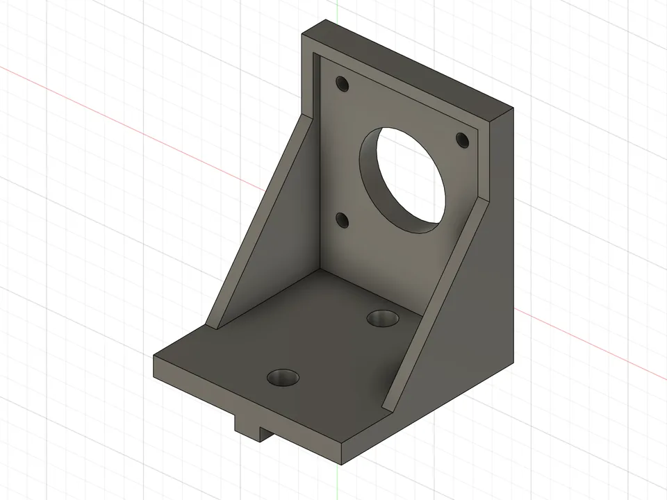
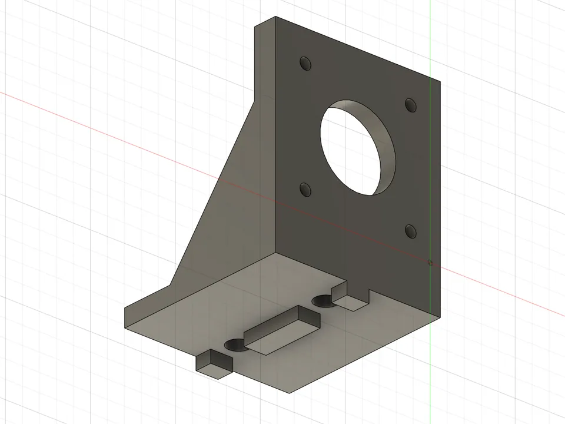
판 두께 5mm. 모터 몸체가 경사 옆면 사이에 들어가고, 축 높이 33.75mm 안에 M6 볼트 머리가 들어갈 틈을 남겼습니다. 판 위쪽의 2mm 테두리는 시뮬레이션해 보니 판을 0.6mm 두껍게 한 것과 같은 효과를 재료 1/3로 냅니다.
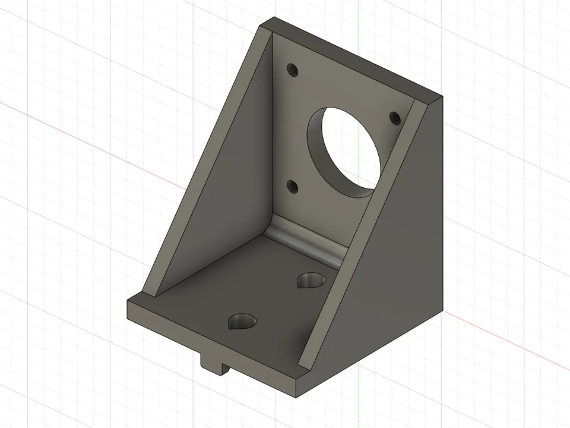
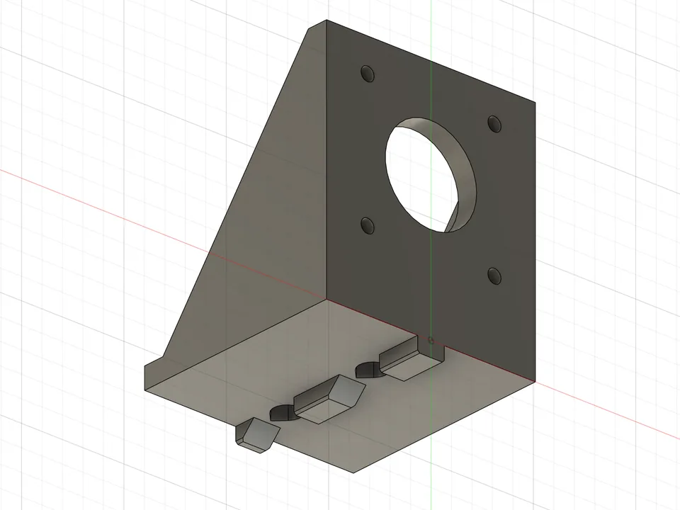
돌출부 끝을 45도로 깎고 M6 구멍을 물방울 모양으로 만들어, 서포트 없이 출력됩니다. 볼트 머리와 모터 사이에 1.6mm 여유가 있습니다.
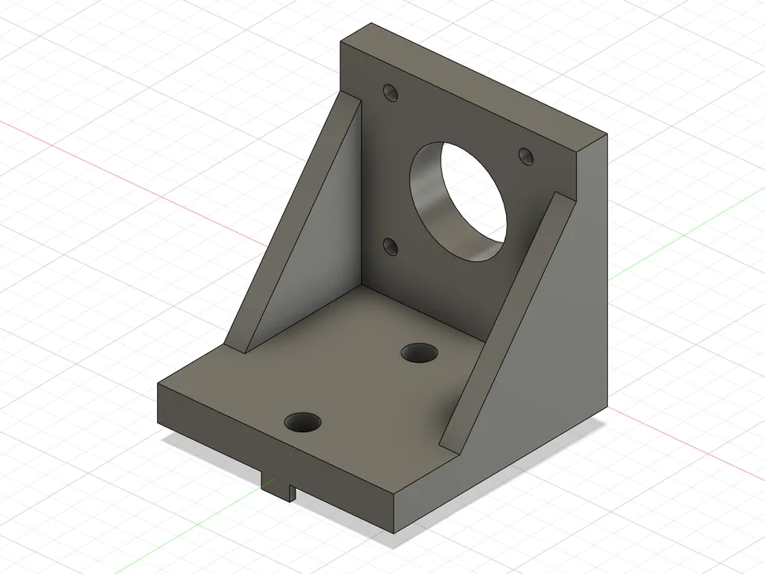
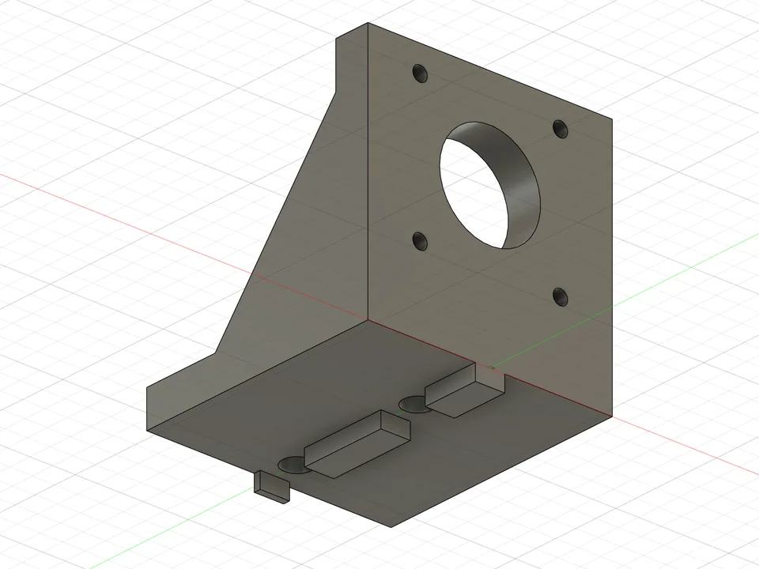
판을 8mm로 두껍게 만들어서 렌치볼트 머리가 모터와 1.4mm 겹칩니다. Gemini가 스스로 버튼헤드 볼트를 쓰라고 안내했습니다. 처음에는 삼각 보강판이 모터 자리를 막아서 한 번 고쳤습니다.
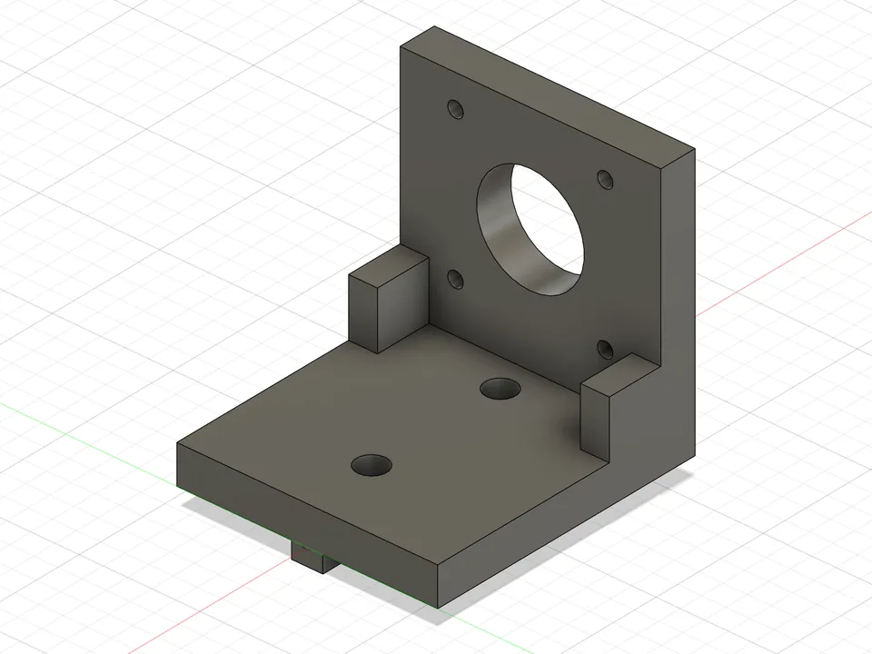
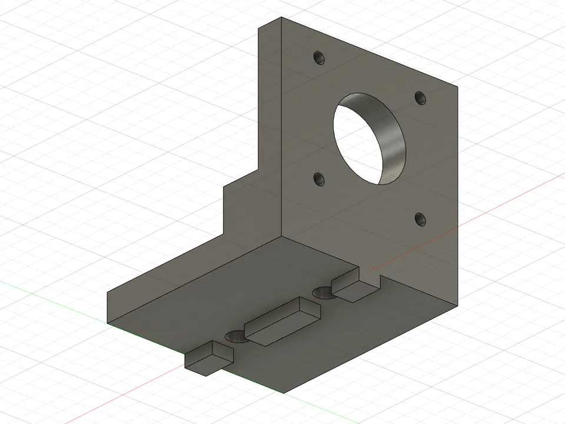
Gemini처럼 판이 8mm라 렌치볼트 머리가 모터에 걸리는데, ChatGPT는 이를 알려 주지 않았습니다. 전체가 피처 하나로 만들어져서 Fusion에서 치수를 고칠 수 없습니다.
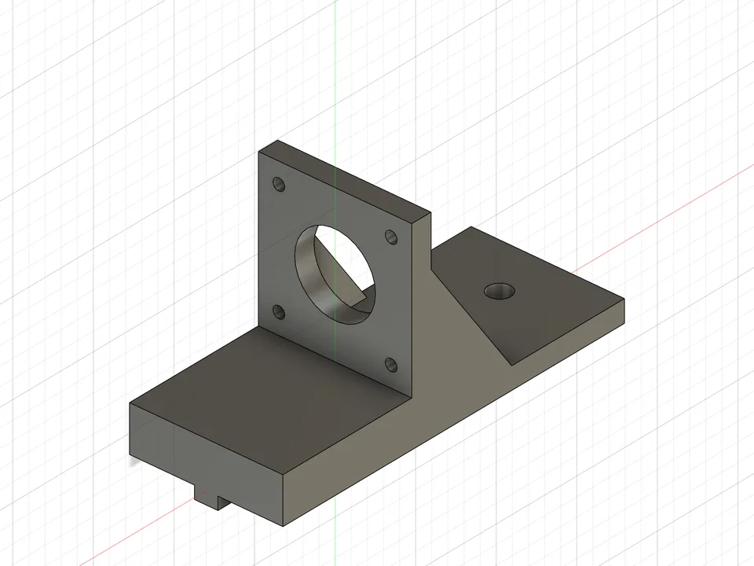
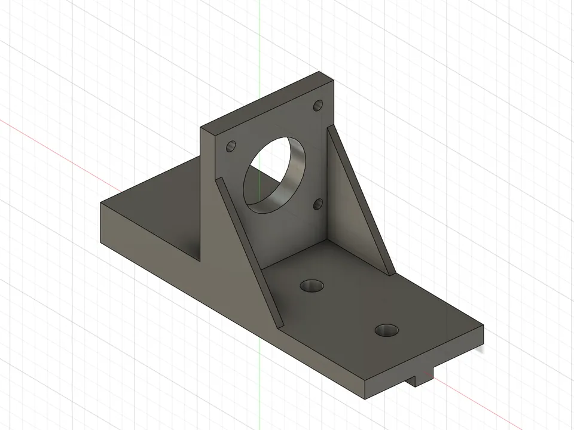
숫자는 다 맞았지만 모터를 보강판 반대쪽에 달아서, 바닥판이 양쪽으로 뻗어 길이가 106mm가 됐습니다. 대신 만들기 전에 질문을 7개 했고, 끝나고 치수표와 출력 방향을 알려 준 점은 가장 좋았습니다.
초록색이 서포트입니다. Claude 것만 서포트가 없습니다.
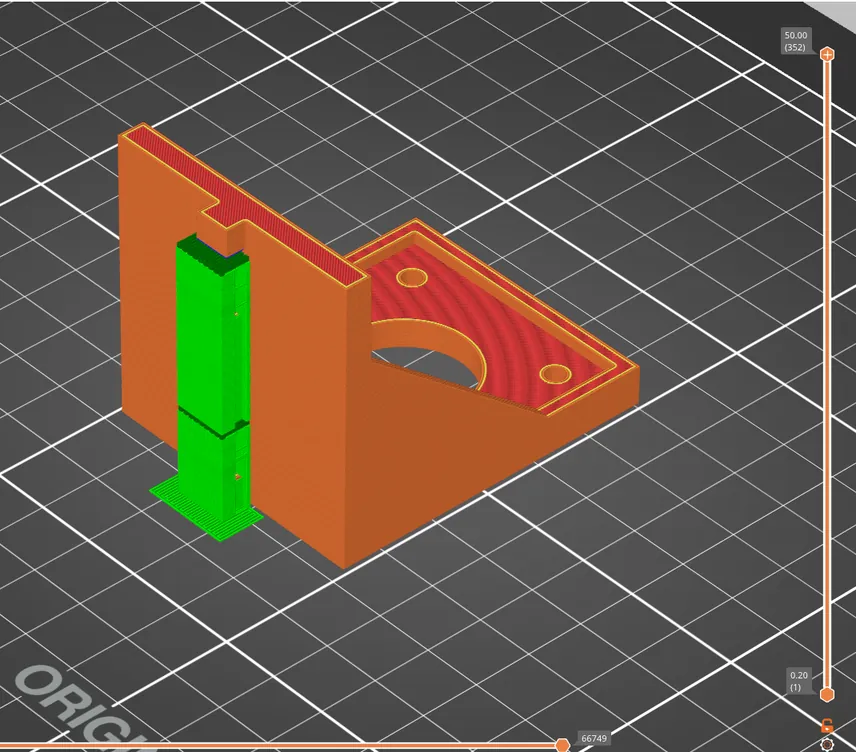
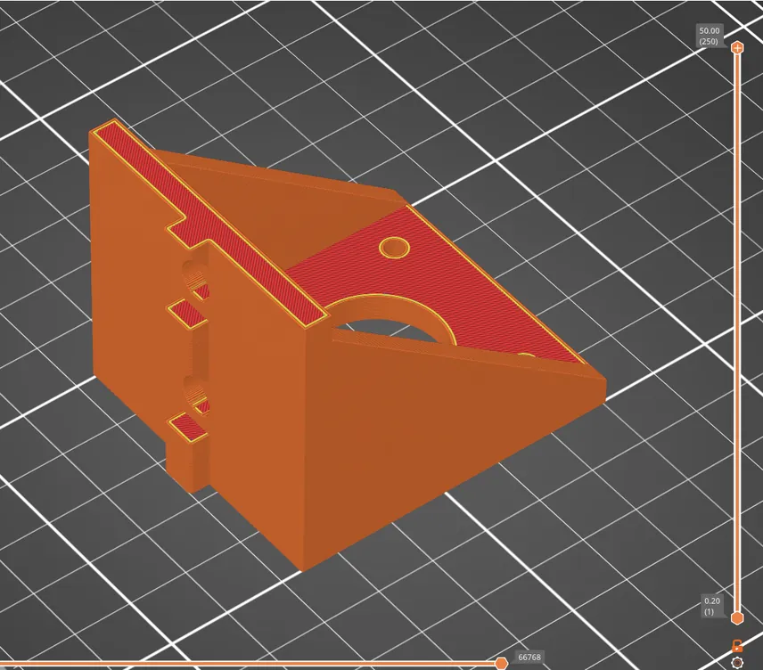
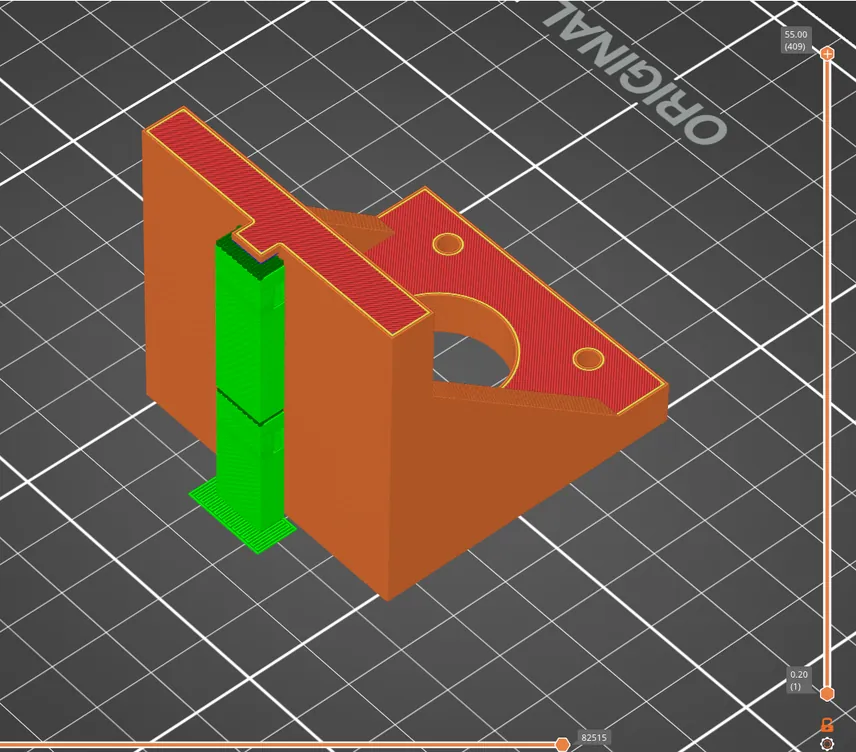
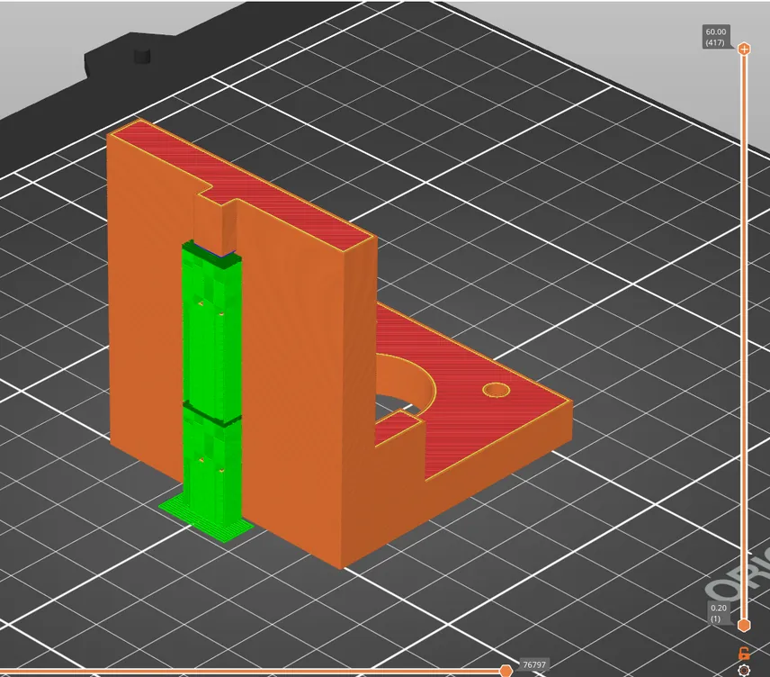
왼쪽 위부터 직접 설계, Claude, Gemini, ChatGPT
정리
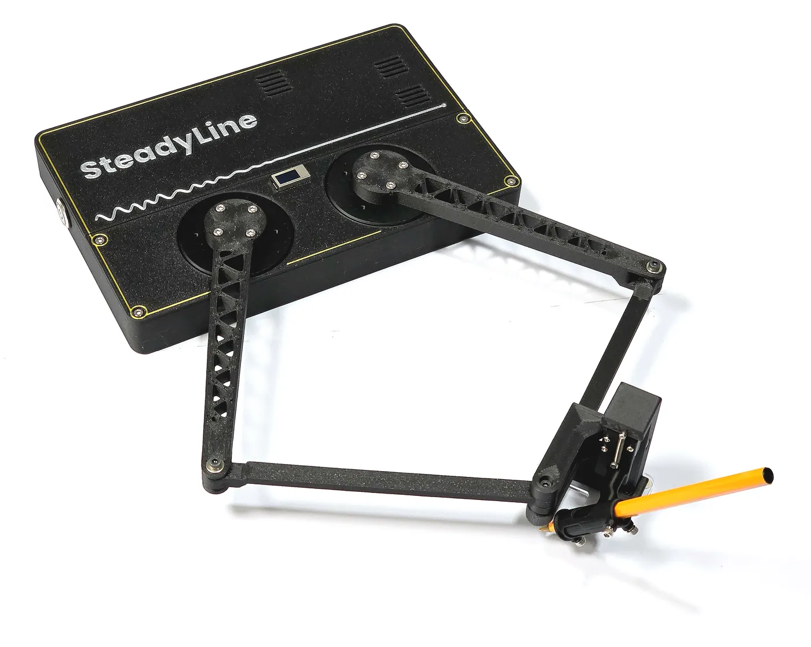
AI와 함께 이 장치를 설계한 방식입니다.
위 AI 비교의 브라켓과 다른 점은, 숫자 밖의 판단을 모델링 전에 직접 정해 두었다는 것입니다.